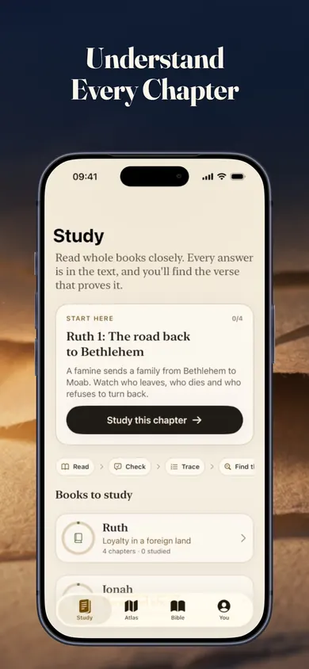

A reading session
Follow the flow.
A useful choice when you want to continue a book and keep the larger movement in view.
- Read a complete passage at a comfortable pace.
- Notice the people, setting or main idea.
- Leave a question to return to later.
Read to follow the passage. Study to slow down with a question. Both belong in a life of reading Scripture.
Open Wayfold in the App StoreRuth and Jonah studies are free. Optional one-time Premium purchase.
iPhone and iPad · iOS / iPadOS 18+
Published by Honest Little Apps, Wayfold's publisher.

For this guide, reading means moving through a passage to follow its flow. Study means returning to a smaller section with a question and checking the details. Those are practical descriptions, not rigid categories: you can pause thoughtfully while reading, and you will read while studying.
Start with the purpose of today's session. Do you want to keep following a book, or is there a question you want to investigate? You do not need a new notebook, a perfect morning routine, or a longer session than you can actually give.
A reading session
A useful choice when you want to continue a book and keep the larger movement in view.
A study session
A useful choice when a detail, connection or unfamiliar phrase makes you want to look more closely.
These time boxes are an editorial starting point. Extend them, shorten them, or stop and return another day. This page never records your selection.
Bring a Bible in the translation you normally use. A bookmark or scrap of paper is enough.
Imagine opening Ruth 1 on two different days. On the first, your aim is simply to follow what happens. On the second, you return with a question you wrote down. The passage has not changed; the job you are asking your session to do has.
This example is a suggested exercise, not a claim that one pace suits every reader. A five-minute session may be only the beginning of a chapter. You can mark where you stopped without turning the session into a race.
Read Jonah 3:9–4:11 together. Then sort six claims into three categories using the text as your evidence. The final question gives the group something to return to after checking its answers.
Print the two-page facilitator packet (PDF)
Suggested length: 20 minutes. Adjust the pace to your group. The activity is a close-reading exercise for adults or teens.
Supports means the text backs the claim. Conflicts means the text gives a reason to reject it. Leaves open means the passage does not settle it.
For each card, name a category and the verse that led to it.
How does the final question change the way you read the earlier scene with the plant? Point to details in Jonah 4:6–11. Keep personal reflection separate from claims about what Jonah did next.
Groups, teachers and libraries may print, photocopy or share the complete, unmodified packet free with credit to Honest Little Apps.
Cards and instructions are original paraphrases. References were checked against Jonah 3 and Jonah 4 in the public-domain World English Bible. Use your group’s own translation while comparing the wording.
| Your starting point | What you can do | What to expect |
|---|---|---|
| A Bible and paper | Read, record observations and write questions. | You choose and organize the session. |
| This free page | Compare two approaches, print a session plan or lead a Jonah evidence sort. | Original outlines and a referenced group activity. Bring a Bible. |
| Wayfold | Use chapter studies, text-linked questions and event-order activities. | Ruth and Jonah studies and their printable leader guides are free. |
The app also includes a Bible reader. Premium is an optional lifetime purchase that adds more study books and other features. See the current App Store listing for the full free/Premium breakdown and local price.
Map tiles need an internet connection. This page's session selector does not transfer a plan into the app.
A short session is still a reason to read carefully. Bible.org's guidance on context recommends considering surrounding verses and the wider book rather than treating a sentence in isolation. This page uses that limited reading principle; it does not attempt to settle differences between Christian traditions.
Keep the passage open while you write. If you cannot point to the words behind an observation, mark it as a question instead. A question left open is more useful than an answer you have rushed.
If your church or course has assigned a translation, commentary or reading plan, start there. For advanced language study or a difficult theological question, use appropriate scholarly resources and guidance from your own tradition.
Wayfold is a companion for structured reading and study. It does not replace a faith community, teacher or the text itself. Paper remains a perfectly workable option.
No. This guide offers two different session goals. You can follow a book today and return to a question tomorrow. There is no score or streak to protect here.
It is a starting structure, not a promise of depth or completeness. Difficult passages can require much more time and help. The suggested minutes are flexible.
No. The current listing includes the Ruth and Jonah studies and their leader guides in the free tier. Premium is optional and is described as a one-time purchase, not a subscription.
No. There is no note field, account or saved session here. Print the outline and add your notes privately. Reloading returns the selector to its default.
Choose a session you can return to. If you want chapter questions and activities beside the text, start with Wayfold's free studies.
Explore Wayfold freeFor a longer starting routine, explore the Wayfold guide to studying the Bible on your own.
The comparison, suggested schedules, Ruth reading scenario and Jonah group activity are original editorial aids from Honest Little Apps, Wayfold's publisher. They are not measured learning outcomes or testimonials. No analytics, cookies or signup form are used by this page. Hosting providers may process standard request logs; see privacy.
Suggested pacing only. Take the time you need.
Passage: ______________________
My observation: _________________________________________
My question: ____________________________________________
Honest Little Apps / Wayfold companion / November 2026